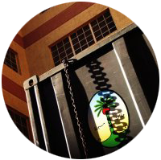

Si desea realizarnos una consulta le pedimos complete el siguiente formulario.
Le responderemos a la brevedad.
Con posicionamiento en más de 180 países y de la mano de una empresa Uruguaya con más de 35 años de trayectoria, Nakhla incluye a Uruguay en su cartera de clientes. Con más de 3 años en plaza, Nakhla Uruguay, representante exclusivo de productos Nakhla, tuvo sus comienzos comercializando solo 8 líneas de productos y únicamente en Montevideo. Al día de hoy la empresa maneja más de 25 líneas de manera exclusiva y para todo el territorio Uruguayo. Con gran posicionamiento no solo en Montevideo sino también en el interior. Trabajando de cerca con proveedores y distribuidores; innovando a cada paso para asegurar la excelencia en cada uno de los procesos. Con un equipo de venta y post-venta especializado para evacuar cualquier duda que el cliente posea.

En ese afán de crecimiento, en el año 2012 la empresa decide anexar la mejor y más prestigiosa línea en carbones de encendido rápido que existe. Los carbones Golden Coal. Fabricados en España; los carbones Golden Coal son un producto realizado con el mejor polvo de carbón vegetal, para garantizar un producto de encendido rápido, larga duración y excelente calidad. En la actualidad además la empresa importa y distribuye una gran variedad de artículos tales como: narguiles, mangueras, papel aluminio, etc. Brindando la posibilidad de adquirir todos los productos en el mismo lugar, directo desde el importador y representante autorizado de los mismos.
La pipa de agua original vino de la India, pero era bastante primitiva, ya que estaba hecha de cáscara de coco. Su popularidad se extendió a Irán y luego al resto del mundo árabe. Pero fue en Turquía que la pipa de agua completó su revolución, y no cambió su estilo desde los últimos cien años.
Cuenta la leyenda que solía fumar narguile estaba cenando y al comer un platillo con pan y melaza (popular poster realizado con caña de azúcar), se le courrió utilizar la melaza para meorar la textura del tabaco, el proceso terminó con éxito; desde entonces a esta combinación se le nombró “Melaza” (Massel).
Nakhla Tabaco surge en el año 1913 en una pequeña población de Egipto llamada SHEBIN EL-KOM, su fundador SALEH MOHAMED EL-IBIARY tuvo el sueño de crear una fábrica para el procesamiento de la MU’ ASSAL –Melaza- (un tabaco de sabor suave, debido a su preparación con melaza, glicerina, aceites con fragancia o esencias). Nakhla significa palmera y deciden ponerle así porque en esta población abundaban este tipo de árboles.
Se trataba de un proyecto individual, humilde , suponiendo un emblema , después de haber sido inspirado por la naturaleza encantadora de la " palmera" , la planta sagrada.
El sueño y el emblema de ese proyecto por el jefe de familia Ibiary en el ámbito de la pequeña ciudad apuntando al crecimiento constante. La gestión de la empresa por casi un siglo gestionada por SALEH MOHAMED EL- Ibiary , el bisabuelo de la familia. Pionero que administró este gran proyecto hasta 1955.
Este proyecto confiado a la segunda generación de esta familia Ahmed Saleh EL- Ibiary , quien asumió el cargo después de su padre siguiendo la tradición familiar pero con una visión diferente.
La pipa de agua (shisha) se compone de cuatro partes: la parte inferior es de vidrio, donde se encuentra el agua. Esta parte está conectada a una de bronce (a veces de acero inoxidable) que es el "corazón" de la shisha, esta parte, el regulador, tiene el humo del tabaco, cuando la persona inhala el "lai" (el tubo flexible que terminan por boquilla). Todo el aparato, hecho de una variedad de materiales, que podrían ser de vidrio, bronce, oro, plata, madera o de caña, se encuentran decorados. El tabaco para narguile (hookah) "MU'ASSEL" se encuentra disponible en sabor natural como "Zaghloul" o en diferentes sabores como frutas o especias.
Si desea realizarnos una consulta le pedimos complete el siguiente formulario.
Le responderemos a la brevedad.